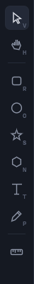
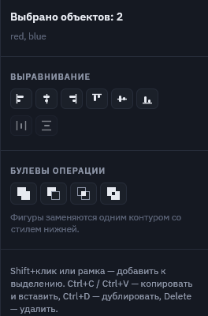
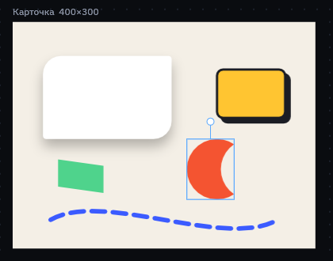
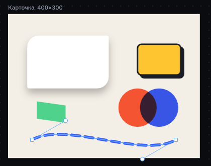
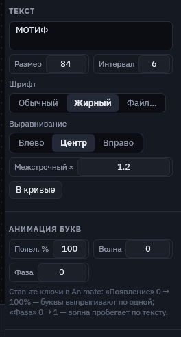
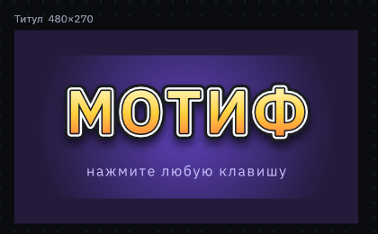
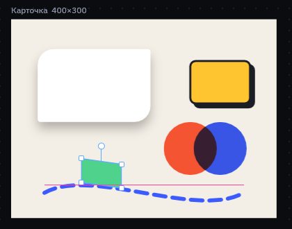
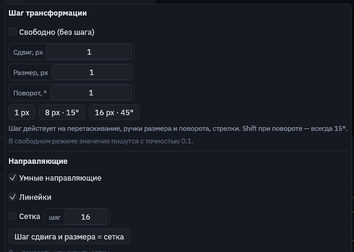
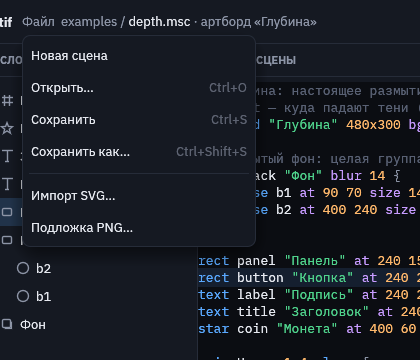

Инструменты и холст
Всё, что можно делать мышью: рисовать фигуры, ставить точки пером, писать текст, выделять, выравнивать и склеивать объекты.
Панель инструментов

| Клавиша | Инструмент |
|---|---|
| V | Выделение: клик выбирает объект, перетаскивание двигает его. |
| H | Рука: двигает холст. То же самое делает зажатый пробел. |
| R O S N | Прямоугольник, эллипс, звезда, многоугольник. Протяните по холсту, и фигура появится. |
| T | Текст: клик по холсту ставит надпись. |
| P | Перо: свой контур из точек и кривых. |
| B | Кость: тяните от сустава к кончику, следующая протяжка продолжает цепочку. См. «Кости и IK». |
| линейка | Нижняя кнопка: шаг сдвига, размера и поворота, сетка и направляющие. |
Новая фигура сразу попадает в скрипт отдельной строкой, перед блоками анимации. Удалить выбранный объект можно клавишей Delete, вместе с ним уйдут и его ключи.
Выделение, размер и поворот
У выбранного объекта есть рамка с ручками. Тяните за угловые ручки, чтобы менять размер, и за кружок над рамкой, чтобы поворачивать. Когда курсор над ручкой поворота, он становится круговой стрелкой.
- Shift при изменении размера сохраняет пропорции, а при повороте даёт шаг 15°.
- Стрелки двигают объект на 1, со Shift — на 10.
- Пока вы тянете объект, меняется только картинка. В скрипт и в историю отмены правка попадает одним шагом, когда вы отпускаете кнопку мыши.
Несколько объектов, выравнивание и булевы операции
Shift+клик добавляет объект к выделению, а рамка, протянутая с пустого места, выделяет объекты под ней. Выделенные объекты двигаются вместе, а панель справа предлагает выравнивание, распределение с равными промежутками и булевы операции.


| Операция | Что получится |
|---|---|
| Объединить | Один контур по внешнему краю всех фигур. |
| Вычесть | Нижняя фигура минус все, что лежат выше неё. |
| Пересечь | Только та часть, где фигуры перекрываются. |
| Исключить | Всё, кроме перекрытий: на месте пересечений получаются дырки. |
Результат — один объект path со стилем нижней фигуры, а исходные фигуры удаляются. Текст тоже можно склеивать с фигурами: буквы превратятся в контуры.
Ctrl+C и Ctrl+V копируют и вставляют. В буфер попадает текст скрипта, поэтому объекты можно переносить между сценами и даже вставлять в текстовый редактор. Ctrl+D дублирует, Ctrl+A выделяет всё.
Перо и правка точек
Инструмент P рисует свой контур:
- клик ставит угловую точку;
- клик с протяжкой ставит плавную точку и сразу вытягивает её ручки;
- клик по первой точке замыкает контур;
- Enter или двойной клик заканчивают открытую линию.

Чтобы поправить готовый контур, выберите его и нажмите Enter (или дважды кликните по нему, или нажмите «Редактировать точки» в панели):
- тяните точки и ручки; ручки плавной точки двигаются зеркально, а с Alt — по отдельности;
- клик по линии добавляет точку;
- двойной клик по точке переключает её между угловой и плавной;
- Delete удаляет выбранную точку.
В скрипте контур хранится как path … d "M … C … Z", в том же формате, что и SVG.
Текст

Инструмент T: клик по холсту ставит надпись «Текст», её содержимое правится в панели справа. Буквы — это настоящие контуры, поэтому к тексту применяется всё, что есть у фигур: градиенты, обводки, тени, размытие и маски.
- Шрифт. Встроенный IBM Plex Sans (обычный и жирный, латиница и кириллица) или свой TTF/OTF: кнопка «Файл…». Файл шрифта лучше держать рядом со сценой.
- Размер, интервал, выравнивание, межстрочный. Размер и межбуквенный интервал анимируются.
- Анимация букв. «Появление» 0 → 100% выпускает буквы по одной, с прыжком. «Волна» с «Фазой» пускает волну по тексту.
- «В кривые». Заменяет текст контуром: буквы можно править по точкам, а шрифт больше не нужен.

title.msc: градиент, три слоя обводки и тень.Направляющие, сетка и линейки

- Умные направляющие. Когда вы тянете объект, его края и центр прилипают к краям и центрам других объектов и артборда. С Alt объект двигается без прилипания.
- Линейки сверху и слева показывают координаты артборда, а также положение курсора и выделения.
- Сетка включается клавишей G. Её шаг задаётся в меню кнопки с линейкой, там же есть кнопка «Шаг сдвига и размера = сетка».

Подложка и импорт SVG
Подложка — это картинка-референс под фигурами: эскиз, кадр из игры или макет интерфейса. Добавьте её через «Файл → Подложка PNG…» или просто перетащите PNG на окно. Когда ничего не выбрано, в панели справа можно поменять её непрозрачность, положение и масштаб. В экспорт подложка не попадает.
Импорт SVG. «Файл → Импорт SVG…» или SVG, перетащенный на окно. Каждая фигура файла станет контуром path внутри новой группы, с заливкой, градиентом, обводкой и прозрачностью. Текст в SVG перед импортом нужно перевести в кривые.

Холст и клавиши
| Клавиши | Действие |
|---|---|
| Колесо мыши | Масштаб холста |
| Пробел + мышь, H | Сдвиг холста |
| F | Вписать артборд в окно |
| Tab | Переключить Design / Animate |
| Пробел | Пуск и пауза анимации |
| , . | Кадр назад / вперёд |
| K | Ключи на позицию, поворот и масштаб выделенного |
| Ctrl+Z | Отменить. Ctrl+Shift+Z или Ctrl+Y — повторить |
| Ctrl+S, Ctrl+O | Сохранить, открыть |
| Ctrl+E | Свернуть или развернуть скрипт |
| F1 | Шпаргалка по синтаксису |
Полный список всегда под кнопкой «?» в правом верхнем углу редактора.